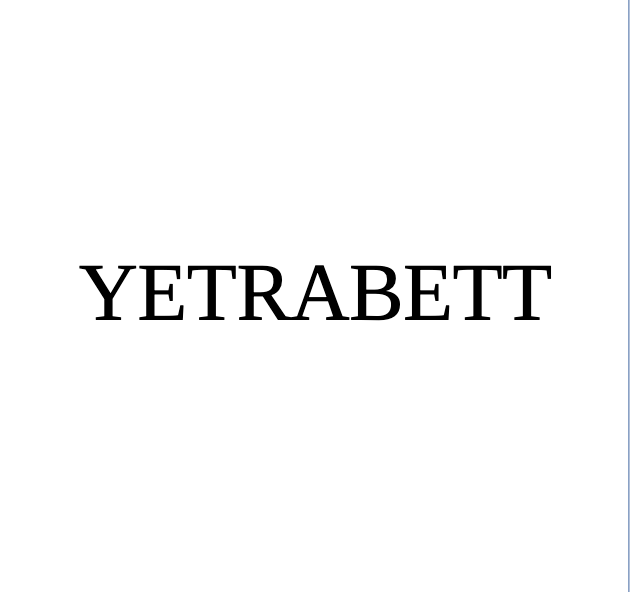
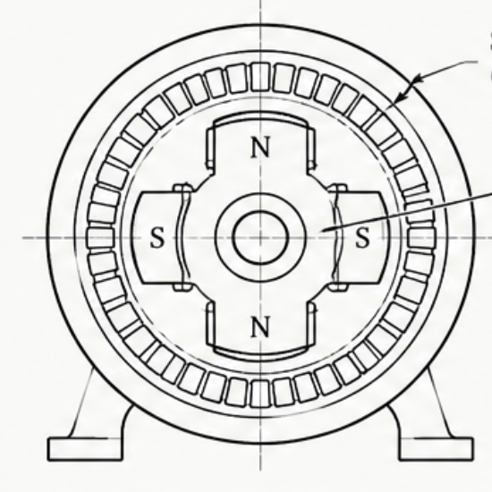
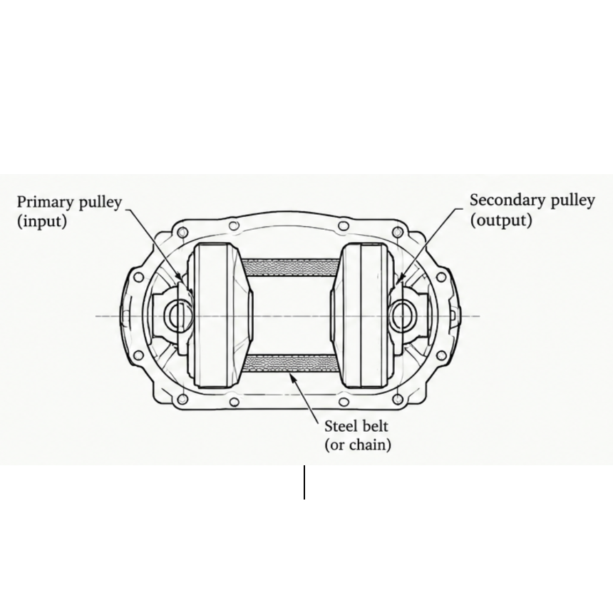
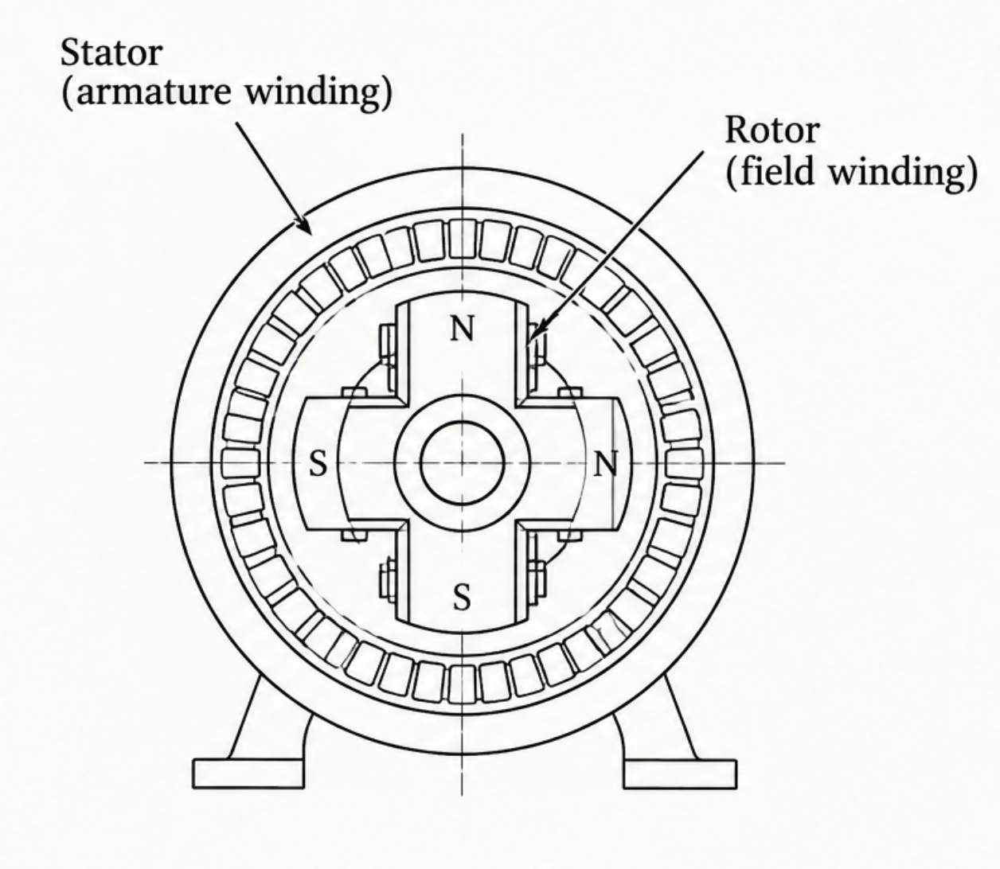

Stage
TRL 1 · Idea validation · Not incorporated
A proposed electromechanical / hybrid architecture for AC frequency conversion and conditioning — an alternative and complementary pathway to conventional power electronics.

Yetrabett is exploring VFCM as a new electromechanical / hybrid approach to AC frequency conversion and conditioning. Instead of relying solely on electronic switching, the architecture combines a motor-generator arrangement with continuously variable mechanical transmission, controllable pole configuration, and closed-loop sensing.
The goal is to investigate whether coordinated mechanical and electrical control can provide continuous frequency conversion and a stable, conditioned AC output — and, ultimately, where VFCM might offer a meaningful advantage or complementary capability alongside modern power-electronic solutions.
Conventional AC frequency converters rely on power-electronic switching, which introduces switching losses, harmonics, EMI, and thermal management challenges — even though modern power electronics remain mature, efficient, and widely deployed. That leaves room to ask whether a different kind of architecture could complement them in specific settings.
VFCM is intentionally open to either a predominantly electromechanical implementation, or a hybrid electromechanical/electronic one. The underlying research question isn't whether mechanical conversion is universally better — it's whether it can offer useful advantages in specific applications, as one architecture among several.
Can coordinated mechanical and electrical control — a CVT working alongside pole configuration, closed by sensing and control — provide continuous, stable AC frequency conversion, and where, if anywhere, does that offer a meaningful advantage over conventional power electronics?
A CVT gives continuous mechanical control of generator speed by varying the transmission ratio, rather than switching between fixed gear steps. Pole configuration gives a complementary electrical degree of freedom — it changes the synchronous speed/frequency relationship rather than acting as a second speed dial. An analyzer and controller close the loop around both, adjusting them as the input frequency drifts.
For example: the input frequency fluctuates, the controller detects the variation, and the CVT ratio and/or pole configuration are adjusted so the output frequency is held closer to target. This is the basis for what the project calls frequency conditioning — proposed, not yet proven.



VFCM combines a CVT, controllable pole configuration, and closed-loop sensing in one frequency-conversion architecture — enabling coordinated mechanical and electrical control of output frequency, rather than relying solely on electronic switching. The intent isn't to claim superiority over modern power electronics, but to investigate where an electromechanical pathway offers useful or complementary characteristics — including, potentially, in demanding settings like railway traction power, where response speed, efficiency, reliability, and fault handling would all still need to be demonstrated before any such claim could be made.
An interactive model of the drivetrain. Move the sliders to change motor speed, CVT ratio and pole count, and watch the output frequency respond.
Concept model for illustration — not measured hardware data. TRL 1, pending experimental validation.
A closer look at the frequency-conditioning behaviour under input variation.
Growing demand for AC frequency conversion and conditioning — in industrial equipment, high-frequency systems, renewable integration, and asynchronous power-system interconnection — is the opportunity VFCM is aimed at, broadly rather than at one finalised segment.
B2B: manufacture and install customised VFCM systems for industrial applications, with ongoing technical support, maintenance and optimisation.
Go-to-market runs through modelling and prototypes first, then pilot testing with industrial partners — refining the system before pursuing customised deployments in whichever applications the results actually support.
Yetrabett is seeking the GENESIS EIR grant to procure the physical components required to move from concept to prototype: motors, generators, CVT components, sensors, and control hardware — along with fabrication, simulation, and experimental testing to validate feasibility and performance. This is a request for hardware realisation, not software development.